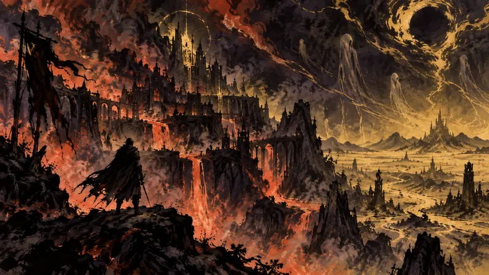
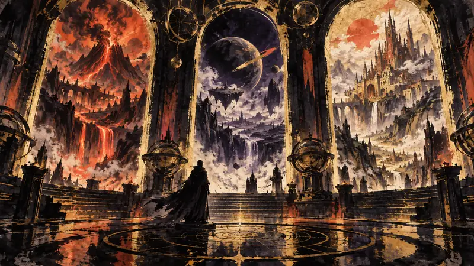
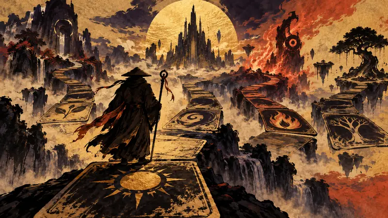
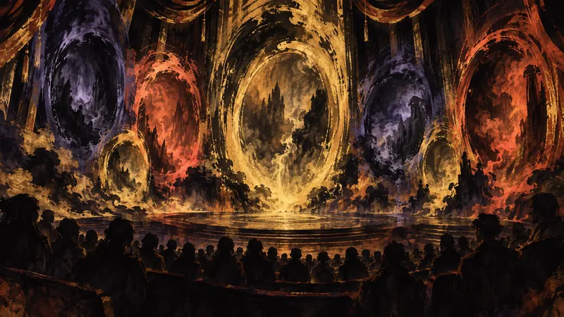
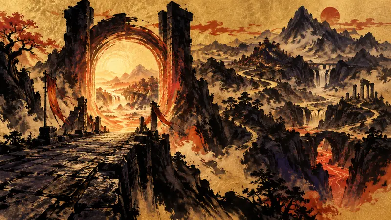
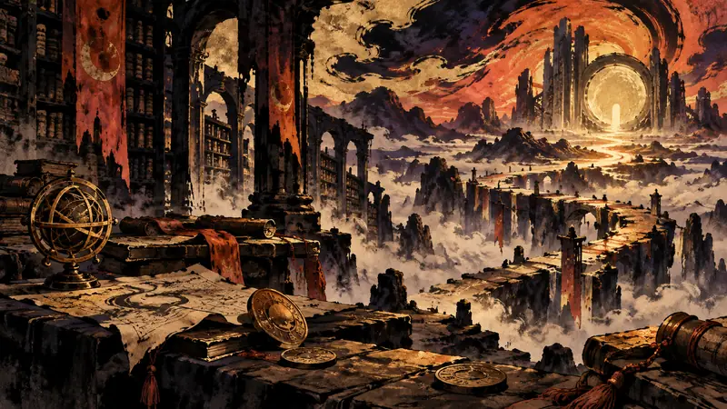
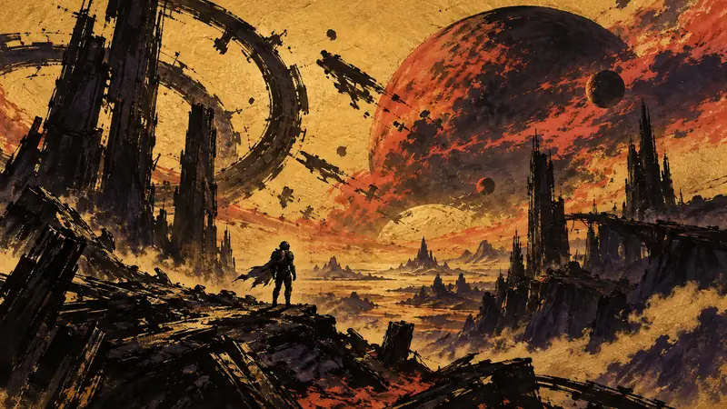
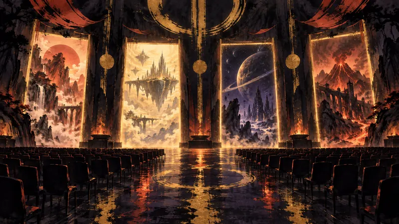
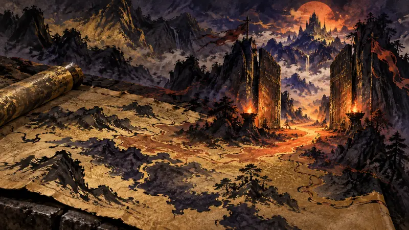

巴哈姆特 GNN ·

2029年春はまだ遠い。プレイヤーはまず、ディアブロがサンクチュアリを征服する物語の幕開け、新クラスの手がかり、そして物語の方向性から、『ディアブロ 5』がこの世界をどこへ導こうとしているのかを見て取ることができる。
元記事を読む
巴哈姆特 GNN ·

同じBlizzConで複数のシリーズが同時に前進し、プレイヤーの期待リストは長くなる。その一方で、会場の熱気だけを覚えて終わらせず、どのニュースに時間を渡す価値があるのかを見分けなければならない。
元記事を読む
인벤 Inven（韓國，韓語） ·

モンクの登場は2027年3月まで待つことになるが、まずは新キーワード、変異種族、2対2が控えており、『ハースストーン』はこの待ち時間をいくつかのアップデートに分けていく構えだ。
元記事を読む
4Gamers ·

同じ開幕式で9月、11月、2027年、2029年、2030年のコンテンツが同時に示され、プレイヤーはまず、ステージ上の約束と実際に遊べるようになるまでの距離を見分けなければならない。
元記事を読む
Gamer.no（挪威，挪威語） ·

通常版、Classicに加えてForeverというルートがもう一つ開かれるなか、恒久的なレベル60上限は、プレイヤーが『World of Warcraft』に戻るペースをどう変えるのだろうか？
元記事を読む
Polygon ·

これは単なる新拡張の予告ではなく、『Worldsoul Saga』最終章が初めて姿を現したものだ。プレイヤーがさらなる答えを見られるのは、Eclipseの後、来年初頭になってからだ。
元記事を読む
JeuxVideo.com ·

『StarCraft』は戻ってくるが、もはやリアルタイムストラテジーではない――2030年発売予定のオープンワールド・シューティング路線は、まず古参プレイヤーの期待をジャンルをめぐる賭けへと押し出す。
元記事を読む
DTF (игры) ·

BlizzConの復活がもたらすのは単独の大作だけではなく、Switch 2向けの9月アップデートからStarCraftの長期的な賭けまで、2030年まで組まれたリリース予定表だ。
元記事を読む
DTF (игры) ·

23年待ち続けた新キャンペーンはもうプレイできるが、本当の選択はノスタルジーだけでなく、30時間のコンテンツに単体で30ドルを払う価値があるかどうかにもある。
元記事を読む